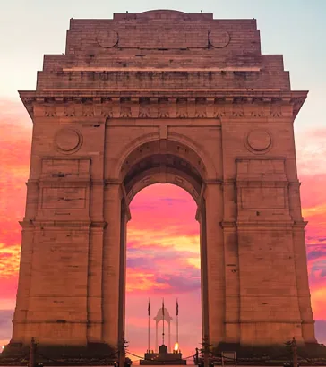
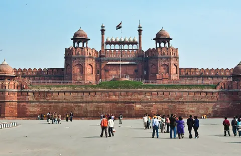
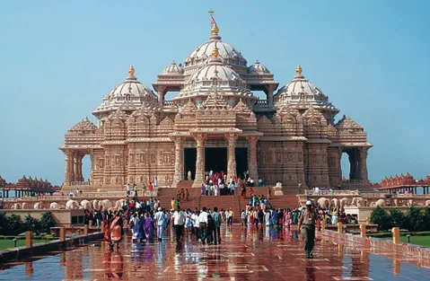
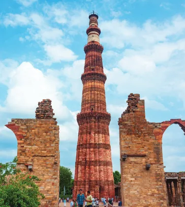

Humayun’s Tomb
Mughal garden-tomb and UNESCO World Heritage Site.
≈ 10 km from venue
Contact
For registration, sponsorship, group bookings or any convention query, write to the GCMAC 2027 secretariat.
The Institute of Cost Accountants of India
CMA Bhawan, 3 Institutional Area, Lodhi Road, New Delhi – 110 003
12–14 February 2027
The Ashok, New Delhi
CMA Bhawan
3, Institutional Area, Lodhi Road
New Delhi – 110 003
CMA Bhawan
C-42, Sector – 62
Noida – 201 309
CMA Bhawan
12, Sudder Street
Kolkata – 700 016
FAQ
Quick answers on registration, fees, CPE credit, travel and sponsorship.
GCMAC 2027 will be held from 12 to 14 February 2027 at The Ashok, Chanakyapuri, New Delhi.
Online registration opens shortly. For assistance, group bookings or institutional rates, write to gcmac2027@icmai.in.
Early Bird rates (till 15 December 2026) are ₹8,000 for corporate delegates and ₹4,000 for CMAs in practice or self-sponsored CMAs, plus 18% GST. After 15 December 2026 the fees are ₹10,000 and ₹5,000 respectively. Accompanying spouse: ₹3,000; students: ₹2,000; foreign delegates: $200.
Yes. Delegate fees are exclusive of 18% GST, which is applicable on registration.
GCMAC 2027 offers 10 CPE hours across the three convention days.
Yes. Group bookings and institutional rates are available. Write to gcmac2027@icmai.in with your requirements.
The venue is approx. 14 km from Indira Gandhi International Airport, 2.5 km from Lok Kalyan Marg Metro Station and 6 km from New Delhi Railway Station. Taxis and app-based cabs are readily available. See travel details →
Platinum, Gold and Silver tiers are available, along with lunch/dinner, convention kit and souvenir advertising options. Write to gcmac2027@icmai.in or visit the sponsorship page.
Discover Delhi & Agra
From Mughal monuments and spiritual landmarks to markets, gardens and street food, Delhi and nearby Agra offer a rich pre- and post-convention experience.
Delhi, a city where thousands of years of history blend seamlessly with the vibrancy of modern life, offers visitors an unforgettable journey through heritage, spirituality, culture, shopping and governance.
Explore iconic landmarks such as the majestic Red Fort, the towering Qutub Minar, the magnificent Humayun’s Tomb, and India Gate, along with the National War Memorial, Purana Qila and the elegant Safdarjung Tomb. Discover Delhi’s spiritual diversity at Swaminarayan Akshardham, Gurudwara Bangla Sahib, the Lotus Temple, Chhatarpur Temple and Nizamuddin Dargah.
For an enriching excursion beyond Delhi, explore Agra’s iconic Taj Mahal, one of the Seven Wonders of the World and a UNESCO World Heritage Site, along with the magnificent Agra Fort and the historic city of Fatehpur Sikri, both celebrated for their outstanding Mughal architecture and UNESCO World Heritage status.
Experience the bustling lanes of Chandni Chowk, renowned for its traditional markets, spices, jewellery and delicious street food, or enjoy the colonial charm of Connaught Place. For authentic Indian crafts, textiles and regional cuisines, Dilli Haat (INA) offers a vibrant cultural experience. Nature lovers can explore the beautiful Amrit Udyan, open to visitors during February, while the National Zoological Park (Delhi Zoo) makes for a delightful seasonal outing.

01
02 03
03
 04
04
 05
05

07
08More to explore
Mughal garden-tomb and UNESCO World Heritage Site.
≈ 10 km from venueA solemn tribute to soldiers of the Indian Armed Forces.
≈ 5 km from venueOne of Delhi’s oldest forts, linked to the city’s ancient past.
≈ 7 km from venueAn elegant late-Mughal garden-tomb.
≈ 9 km from venueProminent Sikh shrine known for its sarovar and community kitchen.
≈ 8 km from venueSprawling temple complex dedicated to Goddess Katyayani.
≈ 18 km from venueSufi shrine of Hazrat Nizamuddin Auliya.
≈ 10 km from venueHistoric lanes for spices, jewellery, textiles and street food.
≈ 10 km from venueColonial-era shopping and business circle in the heart of the city.
≈ 4 km from venueCrafts, textiles and regional cuisines from across India.
≈ 10 km from venueRashtrapati Bhavan gardens, open to visitors during February.
≈ 4 km from venueA seasonal outing for families at the Delhi Zoo.
≈ 10 km from venue
Within Delhi, the Delhi Metro, DTC buses, auto-rickshaws and app-based transport make the city’s attractions easy to reach. Agra is approx. 210 km away and well connected by expressway and rail for a day trip or extended stay.
Join delegates, corporate leaders, academicians and policymakers for three days of insight, dialogue and lasting connections.